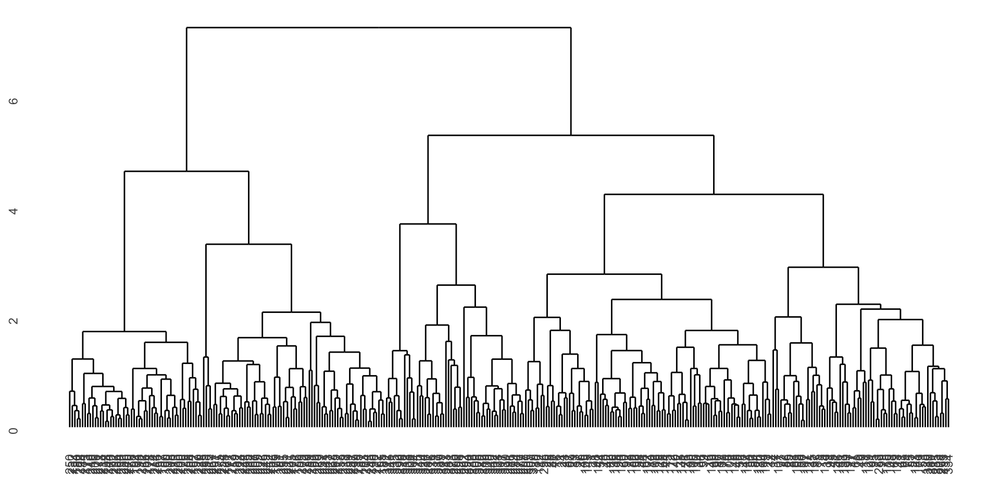
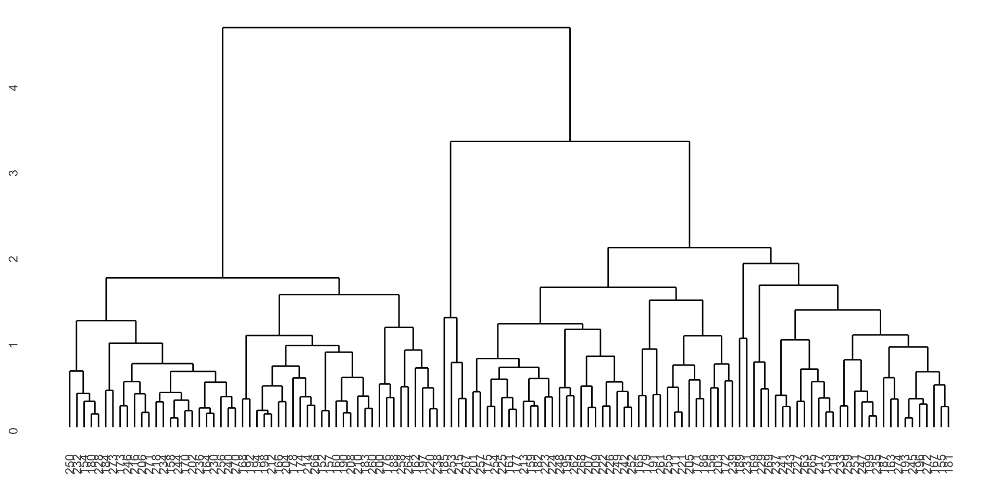
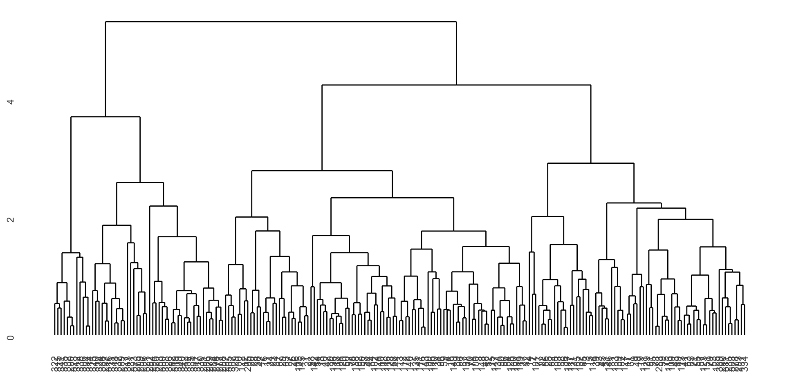
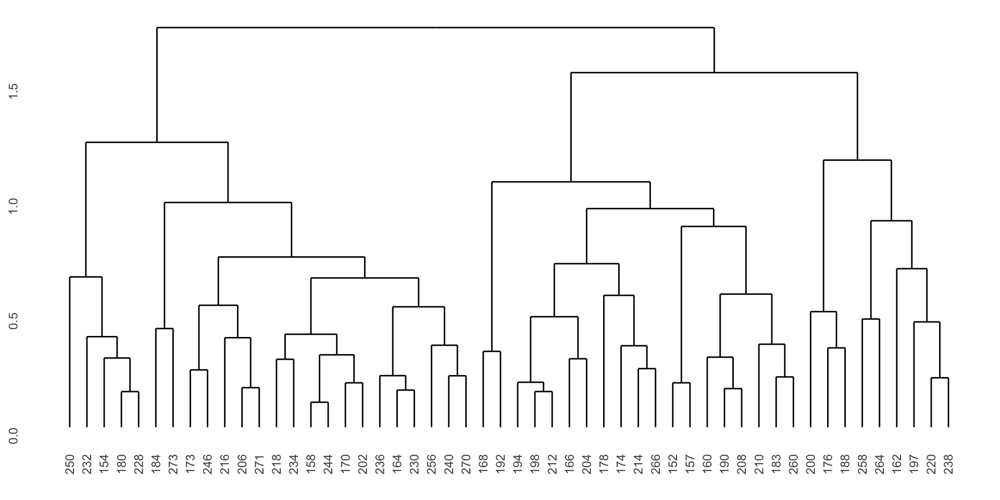
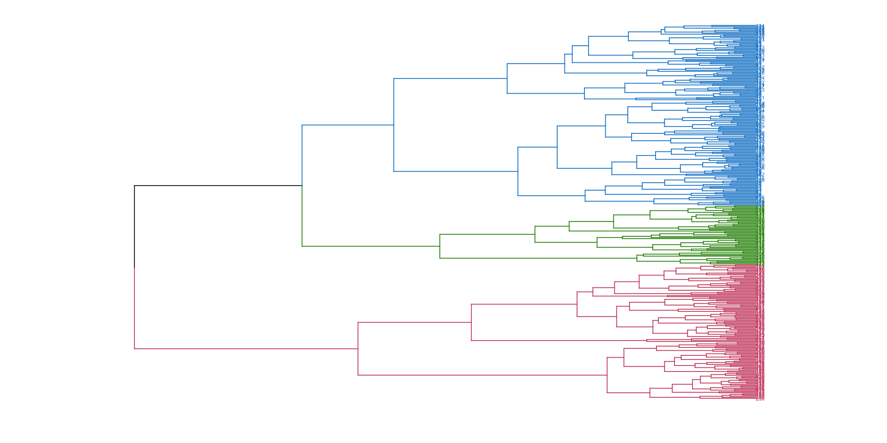
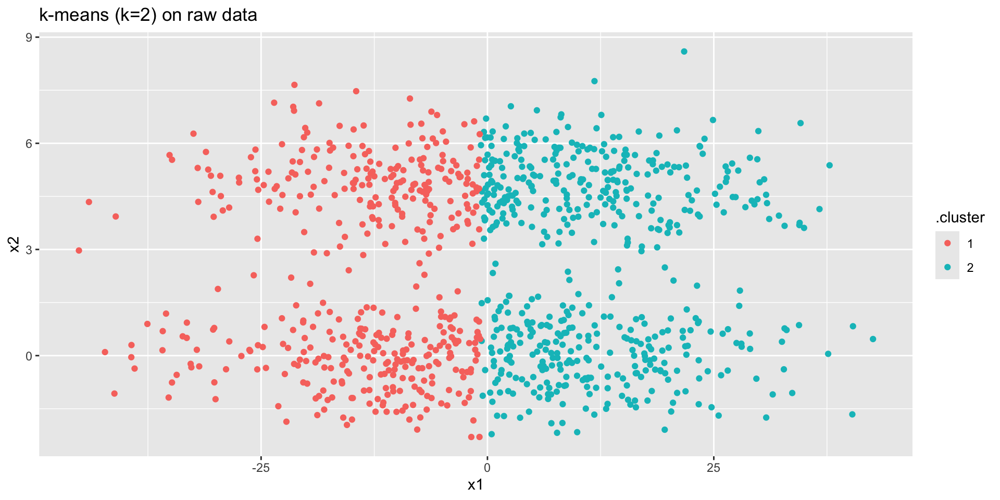
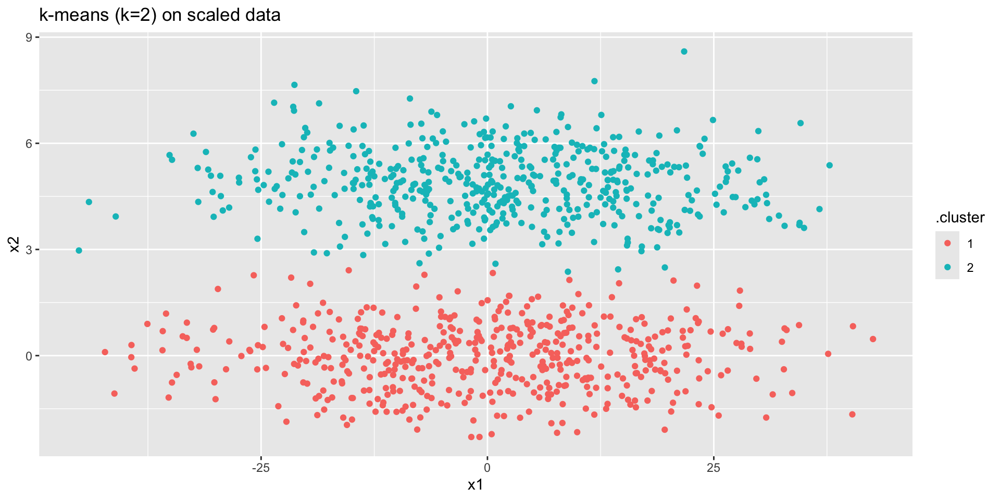

x1 <- c(1,2,3)
x2 <- c(1, 4, 10)
x3 <- c(9, 2, 2)
# d(1,2)
1 - cor(x1, x2)[1] 0.01801949# d(1,3)
1 - cor(x1, x3)[1] 1.866025# d(2,3)
1 - cor(x2, x3)[1] 1.755929# d(1,3) > d(1,2) + d(2,3)
1 - cor(x1, x2) + 1 - cor(x2, x3)[1] 1.773948November 18 + 20 + 25, 2024
Grouping or categorizing observational units (objects) without any pre-assigned labels or scores (no outcome information!)
Latent Dirichlet Allocation: Topic Modeling of TSL Articles
Network & Clustering: Characters in ‘Love Actually’
\[d_E({\textbf x}, {\textbf y}) = \sqrt{\sum_{i=1}^p (x_i - y_i)^2}\]
\[d_P({\textbf x}, {\textbf y}) = 1 - r_P ({\textbf x}, {\textbf y})\] \[\mbox{ or } d_P({\textbf x}, {\textbf y}) = 1 - |r_P ({\textbf x}, {\textbf y})|\] \[\mbox{ or } d_P({\textbf x}, {\textbf y}) = 1 - (r_P ({\textbf x}, {\textbf y}))^2\]
x1 <- c(1,2,3)
x2 <- c(1, 4, 10)
x3 <- c(9, 2, 2)
# d(1,2)
1 - cor(x1, x2)[1] 0.01801949# d(1,3)
1 - cor(x1, x3)[1] 1.866025# d(2,3)
1 - cor(x2, x3)[1] 1.755929# d(1,3) > d(1,2) + d(2,3)
1 - cor(x1, x2) + 1 - cor(x2, x3)[1] 1.773948Using absolute distance doesn’t fix things.
# d(1,2)
1 - abs(cor(x1, x2))[1] 0.01801949# d(1,3)
1 - abs(cor(x1, x3))[1] 0.1339746# d(2,3)
1 - abs(cor(x2, x3))[1] 0.2440711# d(2,3) > d(1,2) + d(1,3)
1 - abs(cor(x1, x2)) + 1 - abs(cor(x1, x3))[1] 0.1519941\[d_C({\textbf x}, {\textbf y}) = \frac{{\textbf x} \cdot {\textbf y}}{|| {\textbf x} || ||{\textbf y}||}\] \[= \frac{\sum_{i=1}^p x_i y_i}{\sqrt{\sum_{i=1}^p x_i^2 \sum_{i=1}^p y_i^2}}\] \[= 1 - r_P ({\textbf x}, {\textbf y}) \ \ \ \ \mbox{if } \overline{\textbf x} = \overline{\textbf y} = 0\]
\[\begin{align} d_H({\textbf x}, {\textbf y}) = \sum_{i=1}^p I(x_i \ne y_i) \end{align}\]

dist function in R
dist in R calculates the distances given above.
is a set of nested clusters that are organized as a tree. Note that objects that belong to a child cluster also belong to the parent cluster.
Agglomerative methods start with each object (e.g., gene, penguin, etc.) in its own group. Groups are merged until all objects are together in one group.
Divisive methods start with all objects in one group and break up the groups sequentially until all objects are individuals.
Single Linkage algorithm defines the distance between groups as that of the closest pair of individuals.
Complete Linkage algorithm defines the distance between groups as that of the farthest pair of individuals.
Average Linkage algorithm defines the distance between groups as the average of the distances between all pairs of individuals across the groups.
of Single Linkage Agglomerative Hierarchical Clustering
| A | B | C | D | E | |
|---|---|---|---|---|---|
| A | 0 | ||||
| B | 0.2 | 0 | |||
| C | 0.6 | 0.5 | 0 | ||
| D | 1 | 0.9 | 0.4 | 0 | |
| E | 0.9 | 0.8 | 0.5 | 0.3 | 0 |
see class notes to walk through the process.
strengths
shortcomings
penguins_h <- penguins |>
drop_na(bill_length_mm, bill_depth_mm, flipper_length_mm, body_mass_g) |>
select(bill_length_mm, bill_depth_mm, flipper_length_mm, body_mass_g) |>
mutate(across(bill_length_mm:body_mass_g, scale))
penguin_hclust <- penguins_h |>
dist() |>
hclust(method = "complete")
penguin_hclust
Call:
hclust(d = dist(penguins_h), method = "complete")
Cluster method : complete
Distance : euclidean
Number of objects: 342 penguin_dend <- as.dendrogram(penguin_hclust)library(ggdendro)
ggdendrogram(penguin_dend)
ggdendrogram(penguin_dend[[1]])
ggdendrogram(penguin_dend[[2]])
ggdendrogram(penguin_dend[[1]][[1]])
library(dendextend)
penguin_dend |>
set("branches_k_color", k = 3) |> # color of the branches
set("labels_colors", k = 3) |> # color of the labels
set("branches_lwd", 0.3) |> # width of the branches
set("labels_cex", 0.3) |> # size of the label
as.ggdend() |>
ggplot(horiz = TRUE)
penguins |>
drop_na(bill_length_mm, bill_depth_mm, flipper_length_mm, body_mass_g) |>
select(island) |>
cbind(cluster = cutree(penguin_hclust, k = 3) ) |>
table() cluster
island 1 2 3
Biscoe 44 123 0
Dream 70 0 54
Torgersen 51 0 0penguins |>
drop_na(bill_length_mm, bill_depth_mm, flipper_length_mm, body_mass_g) |>
select(species) |>
cbind(cluster = cutree(penguin_hclust, k = 3) ) |>
table() cluster
species 1 2 3
Adelie 151 0 0
Chinstrap 14 0 54
Gentoo 0 123 0\(k\)-means clustering is an unsupervised partitioning algorithm designed to find a partition of the observations such that the following objective function is minimized (find the smallest within cluster sum of squares):
\[\text{arg}\,\min\limits_{C_1, \ldots, C_k} \Bigg\{ \sum_{k=1}^K \sum_{i \in C_k} \sum_{j=1}^p (x_{ij} - \overline{x}_{kj})^2 \Bigg\}\]

https://www.naftaliharris.com/blog/visualizing-k-means-clustering/
If a point is “closer” to a different center, moving it will lower the objective function.
Averages minimize squared differences, so taking the new average will result in a lower objective function.
If a point is equidistant from two clusters, the point won’t move.
The algorithm must converge in finite number of steps because there are finitely many points.
strengths
shortcomings
norm_clust |>
kmeans(centers = 2) |>
augment(norm_clust) |>
ggplot() +
geom_point(aes(x = x1,
y = x2,
color = .cluster)) +
ggtitle("k-means (k=2) on raw data")
norm_clust |>
mutate(across(everything(),
scale)) |>
kmeans(centers = 2) |>
augment(norm_clust) |>
ggplot() +
geom_point(aes(x = x1,
y = x2,
color = .cluster)) +
ggtitle("k-means (k=2) on scaled data")
Find the observations (data values!) \(m_k\) that solve:
\[\text{arg}\,\min\limits_{C_1, \ldots, C_k} \Bigg\{ \sum_{k=1}^K \sum_{i \in C_k}d(x_i, m_k) \Bigg\}\]
Important: \(m_k\) is a data point. It is not an average of points or any other summary statistic.
Randomly assign a number, from 1 to \(K\), to each of the observations to serve as initial cluster assignments for the observations.
Iterate until the cluster assignments stop changing:
strengths
shortcomings
Silhouette Width (use \(k\) with smallest silhouette width) – good for PAM (because uses any distance)
Elbow plot (use \(k\) at elbow on plot of \(k\) vs. within cluster sum of squares) – good for \(k\)-means (because based on Euclidean distance)
Consider observation \(i \in\) cluster \(C_1\). Let
\[d(i, C_k) = \mbox{average dissimilarity of } i \mbox{ to all objects in cluster } C_k\] \[a(i) = \mbox{average dissimilarity of } i \mbox{ to all objects in } C_1.\] \[b(i) = \min_{C_k \ne C_1} d(i,C_k) = \mbox{distance to the next closest neighbor cluster}\] \[s(i) = \frac{b(i) - a(i)}{\max \{ a(i), b(i) \}}\] \[\mbox{average}_{i \in C_1} s(i) = \mbox{average silhouette width for cluster } C_1\]
Note that if \(a(i) < b(i)\) then \(i\) is well classified with a maximum \(s(i) = 1\). If \(a(i) > b(i)\) then \(i\) is not well classified with a minimum of \(s(i) = -1\).
We are looking for a large silhouette width.